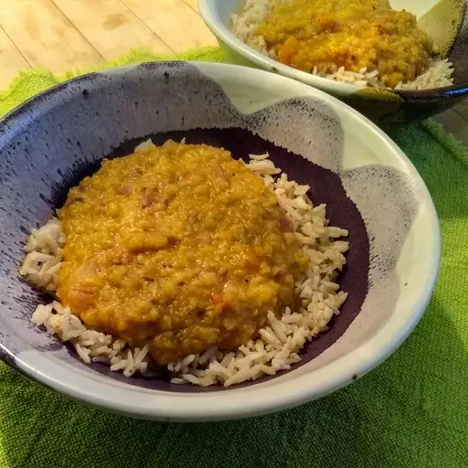

Lentil Daal

Tasty vegan lentil daal
Fast and simple vegan daal using red lentils for 2 persons.
Ingredients
- 250g of red lentils
- 1 can of coconut milk
- 200g of the rice of your choice
- 1 teaspoon of salt
- 1 teaspoon of black pepper
- 1/2 teaspoon of chili
- 1 thumb sized piece of ginger
- 2 pieces of garlic
- 1 teaspon of turmeric
- 2 teaspoons of curry powder
- 2 teaspoons of red curry paste
- 1 small dash of soy sauce
- 1 small dash of lemon juice
- 1/2 teaspoon of cumin
- 1/2 teaspoon of ceylon cinnamon
- 1/2l of ricemilk or water
- 3 teaspoons of vetable oil
- 1 handfull of cashiew nuts
Directions
- Cut the ginger and garlic in little slices. Use pan to sauté in vegetable oil until it gets brown. Cook rice at the same time.
- Add the curry paste and cocount milk and cook for 2 minutes.
- Add the spices and also the lentils. Fill up the pan with rice milk to have enough fluid the lentils can soak up.
- Stir regularly and cook for 25 minutes.
- Arrange the rice and the daal with broken cashews on top.
- ENJOY